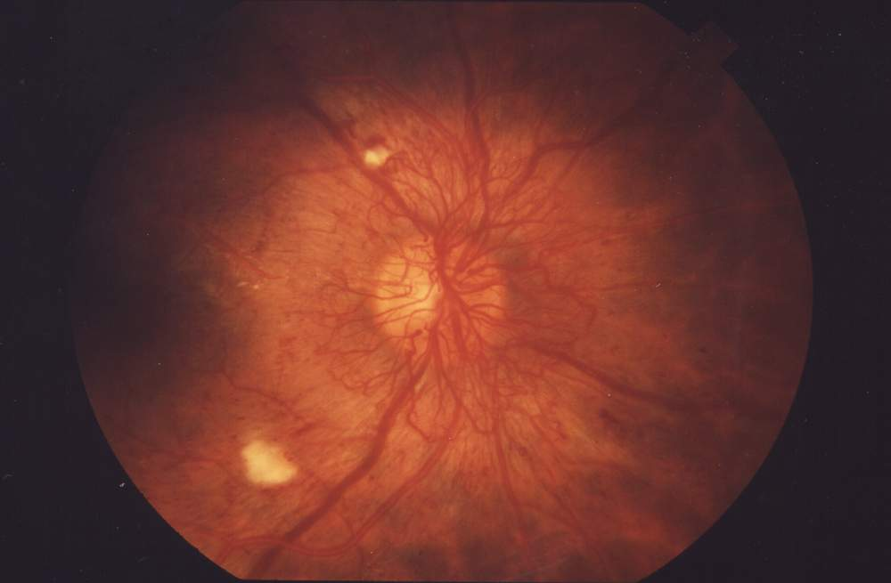

A comparative case study applying ML and deep learning to spam detection and retinal-image screening.
Back to all artifacts
Artifact 02 · Technical case analysis
Machine Learning vs. Deep Learning
Two classification problems, two very different data environments. This case analysis shows why responsible model selection begins with fit—not novelty.
- Model selection
- Bayesian classification
- Convolutional neural networks
- Human oversight
- Course context
- AIML-500 · Machine Learning vs. Deep Learning
- Artifact format
- Analytical report · web case study
- Primary audience
- Technology leaders, AI teams, and risk stakeholders
Differentiate the approaches and justify the best fit for two real operating environments.
Compare data, features, infrastructure, explainability, error consequences, and human oversight.
Bayesian classification, CNN research, evidence synthesis, risk analysis, and HTML/CSS.
Description
The question behind the artifact
When should a team use traditional machine learning, and when does a problem justify deep learning? I evaluated two cases across data type, feature extraction, computing cost, explanation needs, operational risk, and accountability.

Traditional machine learning
Best suited where useful signals can be represented directly and decisions need to remain understandable.
- Uses engineered or exposed features
- Works with moderate labeled datasets
- Requires less computing infrastructure
- Supports easier investigation and adjustment
Deep learning
Best suited to high-dimensional, unstructured data where important patterns are difficult to define manually.
- Learns features from raw images
- Benefits from large expert-labeled datasets
- Captures complex spatial relationships
- Requires stronger validation and monitoring
Tangible artifact
Two model-selection decisions
Case 01 · Email
Spam detection → Bayesian ML
Apache SpamAssassin combines understandable message tests with Bayesian filtering. Email provides direct signals such as links, sender details, message length, header irregularities, and suspicious phrases.
Why it fits: modest infrastructure, understandable evidence, local control, user corrections, and rapid investigation of false positives.
Why not deep learning: greater data, compute, deployment, and monitoring needs may not create enough additional value for this environment.
Case 02 · Medical imaging
Retinal screening → Deep CNN
A retinal image contains subtle patterns that vary in position, contrast, size, and appearance. A convolutional neural network can learn a hierarchy of edges, textures, shapes, and clinically meaningful features from expert-labeled images.
Why it fits: large image collections, high-dimensional input, and patterns that are difficult to encode manually.
Required control: qualified review of positive, uncertain, and ungradable cases, plus monitoring across populations, devices, and sites.
Decision principleModel architecture should follow the data, operating environment, and consequences of error. It should not be selected because it is the newest or most complex option.
Process
How model fit was evaluated
- Define the taskClarify the prediction target and decision the model will support.
- Inspect the dataDetermine whether inputs are structured or unstructured and how labels are produced.
- Compare featuresAssess whether useful signals can be engineered or must be learned from raw data.
- Evaluate operationsConsider computing, latency, maintenance, deployment, and monitoring capacity.
- Evaluate riskExamine false-positive and false-negative consequences and explanation requirements.
- Preserve oversightDefine who remains accountable and when a person must review the output.
Value proposition of the artifact
Why this work matters
Unique value
This work demonstrates my ability to translate technical differences between AI/ML approaches into practical recommendations. I connect model architecture to data, infrastructure, explanation, risk, and accountability.
Relevance
For technical and security leaders, the analysis shows that I can resist technology-first thinking and recommend solutions that fit real organizational constraints while preserving responsible human decision-making.
References
Selected evidence base
- Apache SpamAssassin project overview and filtering approach.
- Apache sa-learn documentation for Bayesian classifier training.
- Gulshan et al. (2016). Development and validation of a deep-learning system for diabetic-retinopathy detection.
- Brant et al. (2025). Postdeployment performance of deep-learning diabetic-retinopathy screening.